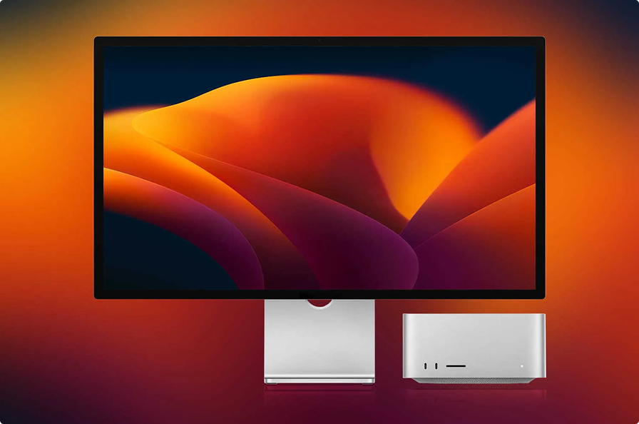

Наталья Васильева
Разработчик

Теория цвета — это особенности эмоционального восприятия человеком тех или иных цветовых решений. Цвета и различные их комбинации влияют на психику человека, а значит, во многом определяют его поведение. Маркетологи и веб-дизайнеры хорошо знают, что правильно подобранная цветовая гамма сайта помогает привлечь и удержать внимание пользователей, сформировать положительное отношение к продукту, подтолкнуть посетителей к совершению целевых действий, повысить конверсию.
Универсального ответа на вопрос, как тот или иной цвет влияет на разных людей, нет. Эмоциональная и поведенческая реакция каждого человека зависит от личного опыта. Вместе с тем можно выделить определенные закономерности влияния цветов на поведение пользователей.
В исследовании «Влияние цвета на маркетинг» (Impact of color on marketing) говорится, что использование разных цветов может существенно влиять на настроение и поведение потребителей. Утверждается, что от 60 до 90% покупателей (в зависимости от категории продукта) дают положительную или отрицательную оценку товару, основываясь только на его цвете.
Все права защищены (c) 2024